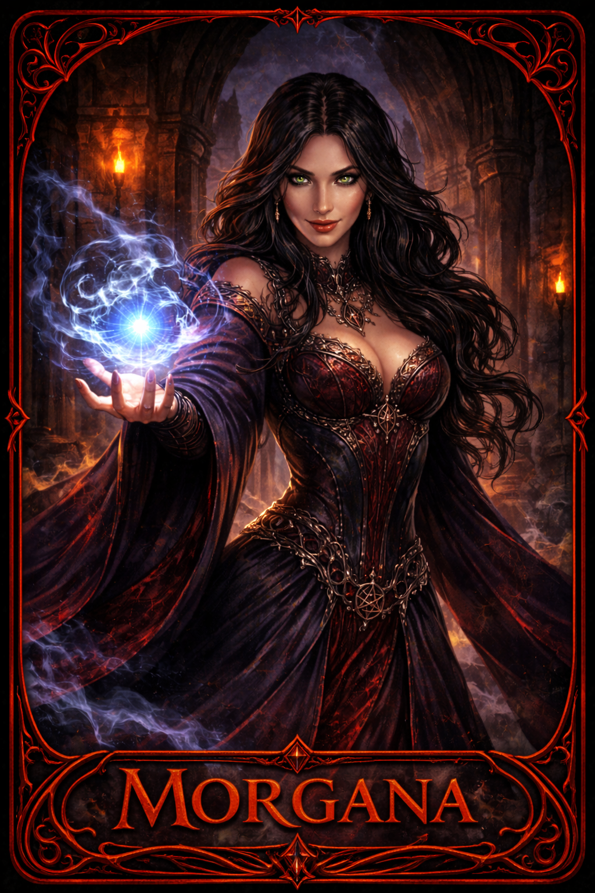
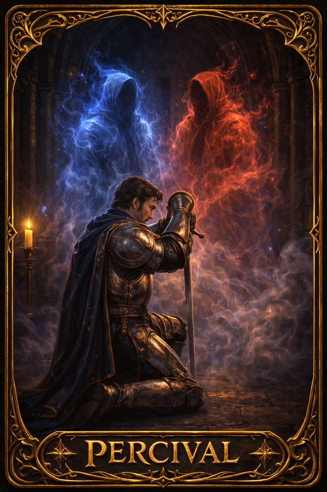
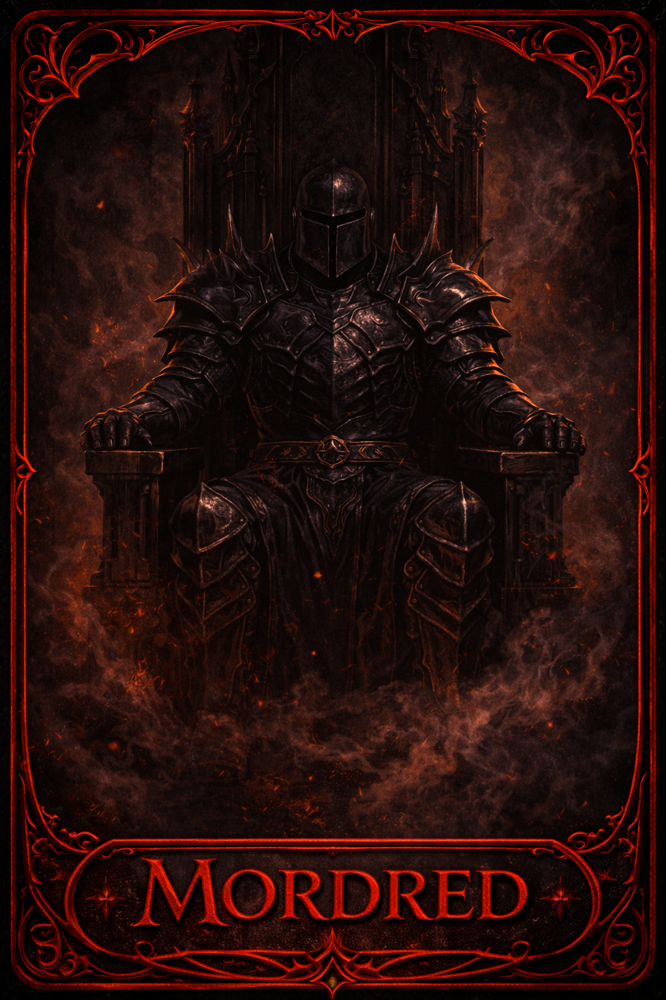
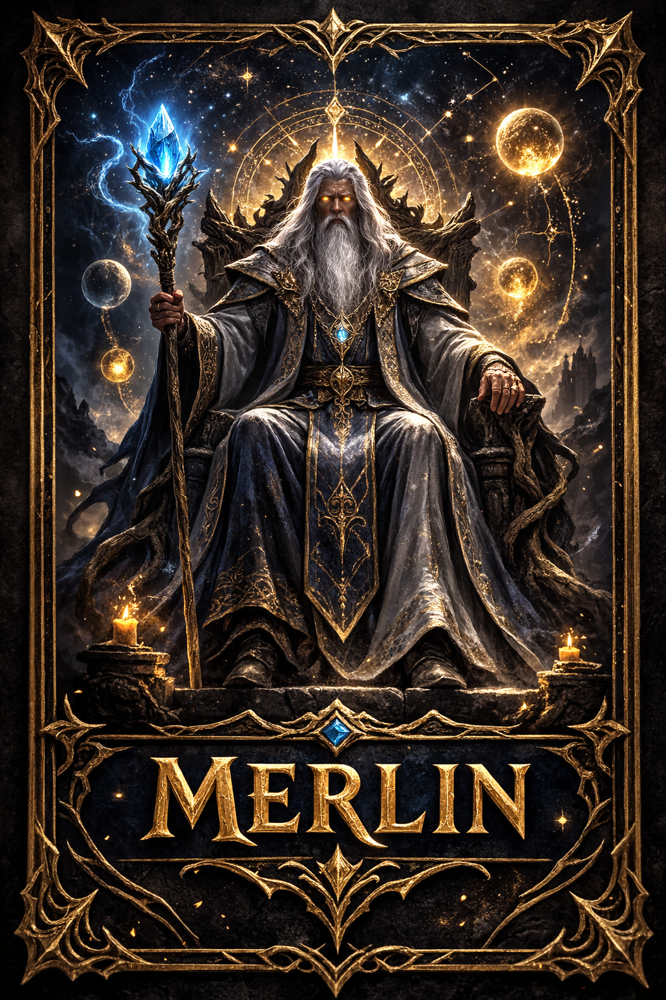

Discord Bot — How to Play
Play with 1 or more humans and fill the rest of the seats with AI bots. Great for practice or when you can't get a full group.
5 to 10 real players. The bot manages the game — roles, quests, voting, and tracking — while the deception is all human.
Run /avalon in any channel. A lobby embed appears with a Join button.
Click Join Game on the embed, or have each human player do so.
Run /addbot difficulty:Hard name:Arthur for each bot seat you want to fill. You need at least 5 players total. The name field is optional — leave it out for a random name. Difficulty options are Easy, Medium, and Hard.
Run /startgame once you have 5–10 total players. Roles are assigned and DMed to human players automatically.
Bots will vote, propose teams, play mission cards, and even attempt assassination — all automatically with natural delays so the game doesn't feel instant.
Run /avalon in your game channel.
Each player clicks Join Game on the lobby embed. You need at least 5 people before starting.
Any player runs /startgame. Roles are randomly assigned and DMed privately to each player. Check your DMs.
Make sure your Discord DMs are open from server members — the bot sends your secret role and mission cards privately.
Each human player receives a DM with their role card, alignment, and any special information (who Merlin sees as evil, who evil players see as teammates, etc.).
The current leader proposes a team for the quest. Run /players to see the numbered player list, then use /propose 1 3 with the player numbers. Bot leaders propose automatically after a short thinking delay.
All players vote Approve or Reject using the buttons in the channel. Votes are hidden until everyone has submitted, then revealed all at once. If more than half reject, the leader passes to the next player and a new team must be proposed. Five consecutive rejections hands evil an automatic win.
Approved team members receive a DM asking them to play Success or Fail. Good players must always play Success. Evil players may play Fail. Cards are shuffled and revealed anonymously. Most quests fail with 1 fail card — some larger quests require 2.
Play continues through up to 5 quests. Good wins by succeeding 3. Evil wins by failing 3.
If Good wins 3 quests, the Assassin gets one chance to identify and eliminate Merlin. If they guess correctly, Evil wins. The Assassin uses /assassinate 2 with the player's number from /players.
/playersNumbered list of all players — use these numbers to propose and assassinate/propose 1 3Propose players #1 and #3 for the quest (leader only)/missioncard successFallback if your DMs are blocked — submit your card in the channel/assassinate 2Assassin only — target player #2 as Merlin/boardShow the current quest track and score/questinfoFull snapshot of the current quest — team, votes, card status/historyFull log of every completed quest with teams, votes, and fail cards/statsServer leaderboard — wins, losses, Merlin survival rate, assassin accuracy/pastgamesBrowse previous completed games with full summaries/endgameForce-cancel the current game at any pointKnows who is evil. Must stay hidden or be assassinated at the end.
Sees Merlin and Morgana — but can't tell which is which.
No special information. Use deduction and trust your gut.
If Good wins 3 quests, gets one shot to eliminate Merlin.
Appears as Merlin to Percival. Sow confusion.
Hidden from Merlin's sight entirely.
Evil, but unknown to other evil players — and vice versa.
Standard evil. Knows teammates, visible to Merlin.